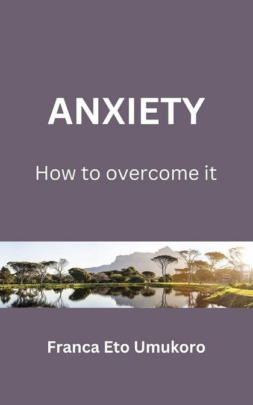
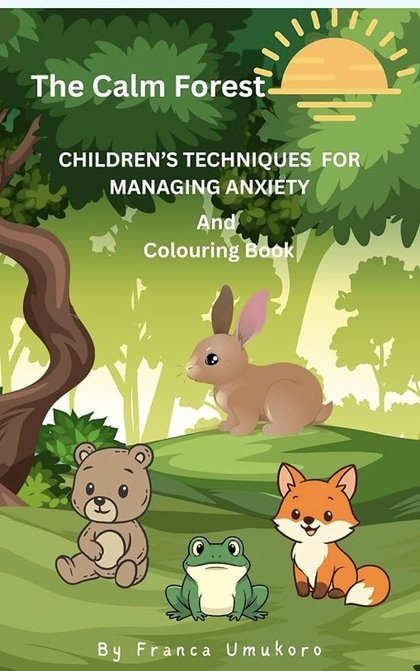
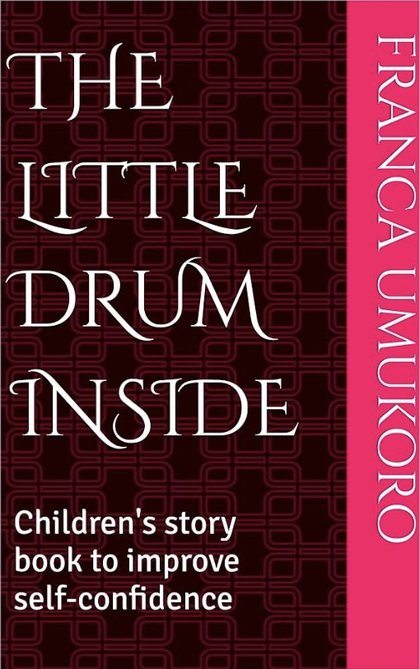

Live and Love Again
My first book: hope and practical steps for healing after hurt and finding the courage to live and love again.
View on Amazon →Resources
Practical help for adults and gentle stories for children, available on Amazon.
My first book: hope and practical steps for healing after hurt and finding the courage to live and love again.
View on Amazon →
Understand how anxiety develops, and learn practical tools such as thought journaling, challenging anxious thoughts and mindfulness.
View on Amazon →
A comic book for children aged 4 to 10 that teaches them how to manage anxiety.
View on Amazon →
A story for children aged 5 to 9 that helps them build their confidence.
View on Amazon →About the author
Franca is a BACP accredited therapist and clinical supervisor. Her books bring the practical tools she uses with clients to adults and children: healing after hurt, overcoming anxiety, calming worried minds and building confidence.
Reading is a great start. If you’d like support from a therapist too, let’s talk.
Also by Franca
Tend, Break the Cycle and Anchor: self-help tools in your pocket.
See my appsTake the first step
You don’t need to have everything figured out before asking for support. Whether you’re looking for counselling, trauma therapy, ADHD support, clinical supervision or workplace wellbeing, the first step is simply to explore your options.